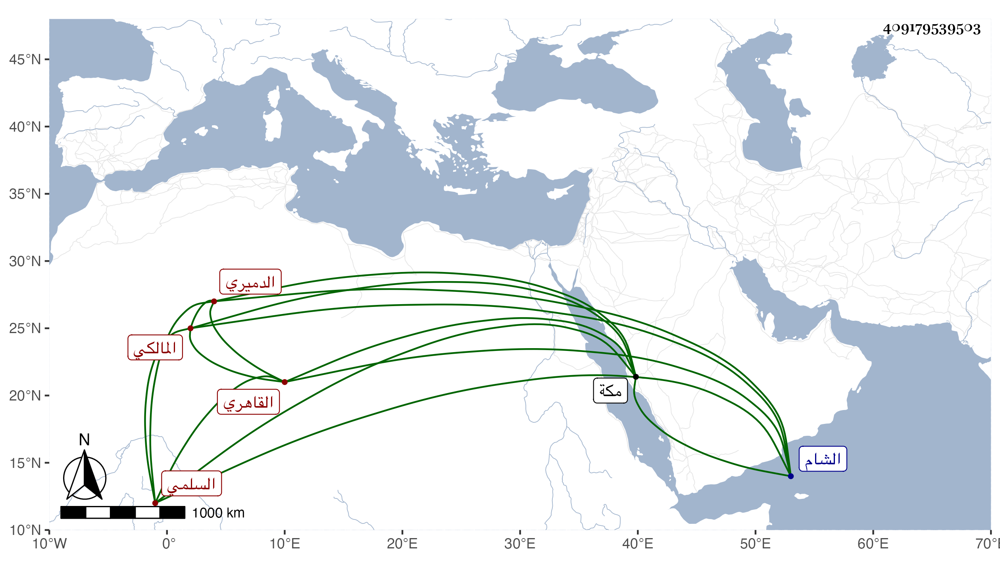

0902Sakhawi.DawLamic.ITO20230111-ara1.EIS1600.409179539503
Biography ID: 409179539503
96
بهرام بن عبد الله بن عبد العزيز بن عمر بن عوض بن عمر التاج أبو البقاء السلمي الدميري القاهري المالكي . ولد سنة أربع وثلاثين وسبعمائة تقريبا كما قرأته بخطه وتفقه بالشرف الرهوني وأخذ عن الشيخ خليل وغيره وسمع على البياني وجماعة فقرأت بخطه أنه سمع مجالس من البخاري على أبي الحرم القلانسي وجميعه على الجمال التركماني الحنفي والسنن لأبي داود على الشيخ خليل بمكة في سنة ستين وسبعمائة والترمذي على الجمال بن خير والشفا على الشمس البياني في آخرين كالعفيف اليافعي ، وفضل في مذهبه وبرع وأفتى ودرس بالشيخونية وغيرها وناب في القضاء عن الاخنائي والجمال البساطي وابن خير ثم بعد موته اشتغل به وذلك في رمضان سنة احدى وتسعين وسبعمائة أيام قيام منطاش ، وتوجه مع القضاة إلى الشام لحرب الظاهر فلما عاد الظاهر عزله بعد أن طعن في صدره وشدقه ، وشرح مختصر شيخه الشيخ خليل شرحا محمودا انتفع به الطلبة لأنه في غاية الوضوح بحل ألفاظه من غير تطويل بدليل أو تعليل واعتمده كل من في زمنه فضلا عمن بعده وله أيضا الشامل في الفقه وشرحه والمناسك في مجلدة وشرحها في ثلاثة أسفار وشرح مختصر ابن الحاجب الأصلي وألفية ابن مالك والدرة الثمينة نحو ثلاثة آلاف بيت وشرحها في حواشي بخطه عليها إلى غيرها من نظم وغيره وكان محمود السيرة لين الجانب عديم الشر كثير البرقل أن يمنع سائلا شيئا يقدر عليه انتفع به الطلبة سيما بعد صرفه عن القضاء ومات كذلك في جمادى الآخرة وقيل في ربيع الأول سنة خمس وقد جاز السبعين ذكره شيخنا في أنبائه باختصار جدا .
